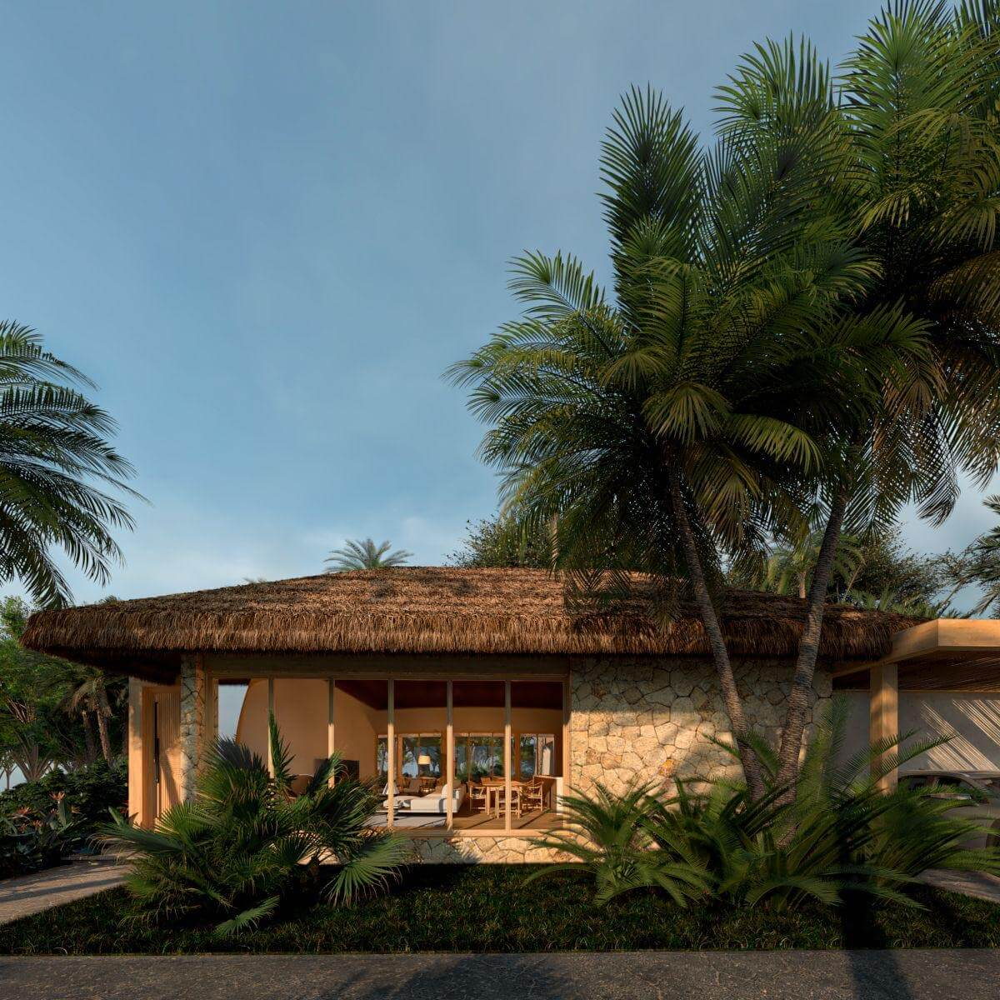

Los Frailes: La Playa Más Hermosa de Manabí
Considerada una de las joyas naturales de Ecuador, Playa Los Frailes es un destino imperdible para amantes de la naturaleza y la tranquilidad. Ubicada a pocos kilómetros de Ayampe, dentro del Parque Nacional Machalilla, esta playa virgen ofrece un paisaje de ensueño y una experiencia inolvidable.
1. Un paraíso natural protegido
Los Frailes forma parte del Parque Nacional Machalilla, lo que garantiza su conservación. Sus aguas cristalinas, arena blanca y exuberante vegetación la convierten en un santuario para la flora y fauna marina, ideal para snorkel y senderismo.
2. Actividades para disfrutar
Además de nadar y relajarte en sus orillas, puedes explorar senderos que conducen a miradores con vistas panorámicas de la costa y otras playas cercanas. Es un lugar perfecto para la fotografía y la observación de aves marinas.
3. Cómo llegar desde Ayampe
Desde Ayampe, puedes tomar un autobús local hacia Puerto López y pedir que te dejen en la entrada del Parque Nacional Machalilla (vía a Los Frailes). También puedes contratar un taxi o mototaxi. El acceso a la playa es controlado y se requiere una caminata de unos 20 minutos.
4. Consejos para tu visita
Lleva agua, snacks, protector solar, un sombrero y una bolsa para llevar tus residuos. No hay ventas ambulantes ni restaurantes en la playa, lo que contribuye a su estado virgen. Respeta las indicaciones del parque para proteger este hermoso ecosistema.